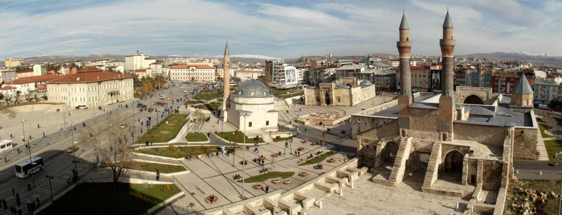

Sivas'a farklı dönemlerde hakim olan devletler, şehre kendilerine özgü değişik isimler vermişlerdir. Bunlar; Sebaste, Sipas, Megalopolis, Kabira, Diaspolis (Tanrı Şehri), Talaurs, Danişment İli, Eyalet-i Rum, Eyalet-i Sivas ve Sivas isimleridir.
Bu gün kullanılan Sivas isminin kaynağı hakkında ise farklı görüşler bulunmaktadır. Bunların içinden 'Sebaste' Sebasteia eski yunancada (Augustus Şehri) ismi, Pontus kralı Polemon'un hanımı Pitodoris tarafından verilmiştir. Romalılar, Pont Krallığını egemenlikleri altına aldıkları zaman şehrin yönetimini Pont Krallığı'nda bırakmışlardı. Pont Kralının hanımı ise, Roma Kralı Augustus'un sevgisini kazanmak ve ona bir şükran ve sadakat ifadesi olmak üzere Yunanca'da Ogüst şehri anlamına gelen 'Sebaste' adını verdiği sanılmaktadır. Sebaste'nin zamanla 'Sivas'a dönüştüğü ileri sürülmektedir.
Yine diğer bir görüş de, bugün 'Sivas' olarak kullanılan ismin 'Sipas'tan geldiğidir. Şehrin ilk kurulduğu dönemlerde, bugünkü şehrin merkezinin bulunduğu yerde büyük çınar ağaçlarının altında üç adet su gözesi (Kaynağı) bulunmaktadır. Bu gözelerden bir tanesi 'Allah'a Şükür'ü ikincisi 'ana ve babaya saygı'yı, üçüncüsü de 'Küçüklere sevgi'yi temsil eder. Bu bölgede yaşayan insanlar, zamanla bu özelliklerini koruyamayıp yitirince, bu üç göze de kurur. Şehrin isminin de 'üç göze' anlamına gelen 'Sipas'tan kaynaklandığı ve zamanla bugün kullandığımız 'Sivas'a dönüştüğü ileri sürülmektedir.